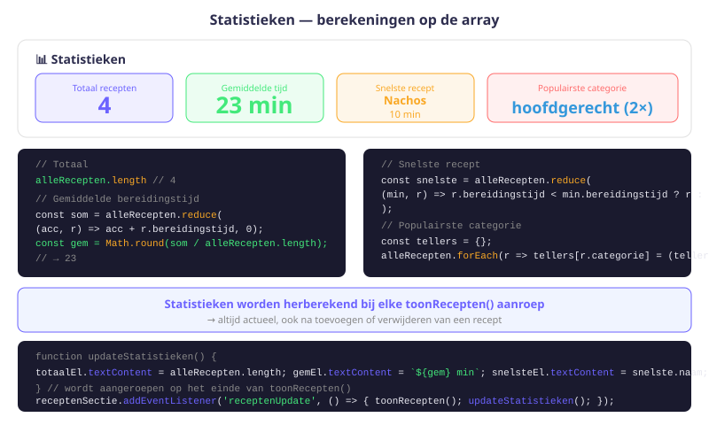
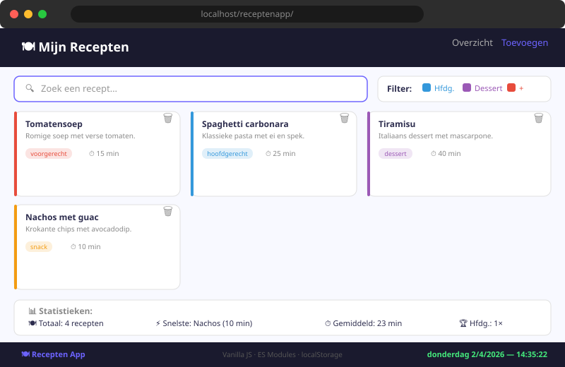

Receptenapp — Statistieken & Live Klok
- Statistieken berekenen uit een array van objecten met
forEachenreduce - Het
Date-object gebruiken om datum en tijd op te vragen - Een live klok bouwen met
setInterval() - Een footer dynamisch aanmaken en live bijwerken via JavaScript
- Een click-event gebruiken voor een visueel effect (willekeurige kleur)
- Een "willekeurig recept van de dag" implementeren
- De complete Receptenapp evalueren en afwerken
16.1 Statistieken berekenen
We voegen een statistieken-sectie toe aan index.html:
<h2>Statistieken</h2>
<ul class="statistieken">
<li id="aantalRecepten">Totaal aantal recepten: </li>
<li id="snelsteRecept">Snelste recept: </li>
<li id="gemiddeldeTijd">Gemiddelde bereidingstijd: </li>
</ul>Aantal recepten
function toonAantalRecepten() {
document.querySelector('#aantalRecepten').textContent =
`Totaal aantal recepten: ${alleRecepten.length}`;
}Snelste recept (kortste bereidingstijd)
function vindSnelsteRecept() {
if (alleRecepten.length === 0) return null;
let snelste = alleRecepten[0];
alleRecepten.forEach(r => {
if (r.bereidingstijd < snelste.bereidingstijd) {
snelste = r;
}
});
return snelste;
}
function toonSnelsteRecept() {
const snelste = vindSnelsteRecept();
if (snelste) {
document.querySelector('#snelsteRecept').textContent =
`Snelste recept: "${snelste.naam}" (${snelste.bereidingstijd} min)`;
}
}Gemiddelde bereidingstijd
function berekenGemiddeldeTijd() {
if (alleRecepten.length === 0) return 0;
const totaal = alleRecepten.reduce((som, r) => som + r.bereidingstijd, 0);
return Math.round(totaal / alleRecepten.length);
}
function toonGemiddeldeTijd() {
document.querySelector('#gemiddeldeTijd').textContent =
`Gemiddelde bereidingstijd: ${berekenGemiddeldeTijd()} min`;
}Voeg de statistieken-functies toe aan toonRecepten() zodat ze live bijwerken:
function toonRecepten() {
document.querySelector('.recepten').innerHTML = '';
// ... filter + forEach ...
toonAantalRecepten();
toonSnelsteRecept();
toonGemiddeldeTijd();
}
16.2 Willekeurig recept van de dag
Bij elke paginalading tonen we een willekeurig "recept van de dag":
function toonReceptVanDeDag() {
if (alleRecepten.length === 0) return;
const index = Math.floor(Math.random() * alleRecepten.length);
const recept = alleRecepten[index];
document.querySelector('#recept-van-de-dag').innerHTML = `
<h3>Recept van de dag: ${recept.naam}</h3>
<p>${recept.beschrijving}</p>
<p class="meta">${recept.categorie} — ${recept.bereidingstijd} min</p>
`;
}
toonReceptVanDeDag();16.3 Het Date-object
Het Date-object geeft toegang tot de huidige datum en tijd:
const nu = new Date();
nu.getFullYear(); // 2025
nu.getMonth(); // 3 (let op: 0 = januari, 3 = april!)
nu.getDate(); // dag van de maand (1-31)
nu.getHours(); // uren (0-23)
nu.getMinutes(); // minuten (0-59)
nu.getSeconds(); // seconden (0-59)getMonth() begint bij 0getMonth() geeft een waarde van 0 tot 11 terug. Januari is 0, december is 11. Als je de maandnaam wil tonen, gebruik dan toLocaleDateString() — dat doet de omzetting automatisch.
Om een mooie datum te tonen, gebruik je toLocaleDateString() met een opties-object:
const nu = new Date();
const opties = {
weekday: 'long', // 'maandag'
year: 'numeric', // '2025'
month: 'long', // 'april'
day: 'numeric', // '3'
};
const dag = nu.toLocaleDateString('nl-NL', opties);
// → "donderdag 3 april 2025"16.4 Live klok in de footer met setInterval()
const toonTijd = () => {
const nu = new Date();
const opties = {
weekday: 'long',
year: 'numeric',
month: 'long',
day: 'numeric',
};
const dag = nu.toLocaleDateString('nl-NL', opties);
const uur = String(nu.getHours()).padStart(2, '0');
const min = String(nu.getMinutes()).padStart(2, '0');
const sec = String(nu.getSeconds()).padStart(2, '0');
document.querySelector('footer').innerHTML = `
<p>© 2025 — Receptenapp</p>
<p>${dag} — ${uur}:${min}:${sec}</p>
`;
};
// Start de klok
toonTijd();
setInterval(toonTijd, 1000); // Herhaal elke secondepadStart(2, '0') zorgt dat uren/minuten/seconden altijd 2 cijfers hebben: 08:05:03 in plaats van 8:5:3.
| Concept | Code | Gebruik |
|---|---|---|
| Huidig jaar | new Date().getFullYear() | Copyright in footer |
| Datum opmaken | new Date().toLocaleDateString('nl-NL', opties) | Leesbare datum |
| Uren/min/sec | .getHours(), .getMinutes(), .getSeconds() | Tijdweergave |
| Nullen toevoegen | String(n).padStart(2, '0') | 08 ipv 8 |
| Live herhaling | setInterval(functie, 1000) | Elke seconde updaten |
16.5 H1 klik-event: willekeurige kleur
Een leuk detail: klik op de h1 en de kleur verandert willekeurig:
const h1Titel = document.querySelector('h1');
h1Titel.addEventListener('click', () => {
const r = Math.round(Math.random() * 255);
const g = Math.round(Math.random() * 255);
const b = Math.round(Math.random() * 255);
h1Titel.style.color = `rgb(${r}, ${g}, ${b})`;
});Math.random() geeft een willekeurig getal van 0 (inclusief) tot 1 (exclusief). Door te vermenigvuldigen met 255 en af te ronden met Math.round(), krijgen we een willekeurig geheel getal van 0 tot 255 — exact het bereik van een kleurkanaal in RGB.
16.6 Volledig overzicht van de Receptenapp
| Hoofdstuk | Concept | Bestand |
|---|---|---|
| H09 | Projectopzet, data, ES-modules | recepten.js, hulpfuncties.js |
| H10 | DOM-manipulatie, recepten weergeven | script.js |
| H11 | Formulier, validatie, toevoegen | add.js |
| H12 | localStorage, verwijderen, Custom Event | script.js + add.js |
| H13 | Filteren op categorie | script.js |
| H14 | Zoekfunctie + tekenteller | script.js |
| H15 | Verwijderen uitdieping, undo | script.js |
| H16 | Statistieken, Date, setInterval | script.js |
Concepten gebruikt in de volledige app:
- ES Modules (import/export)
- Arrays van objecten
- DOM manipulatie (createElement, innerHTML, classList)
- Event listeners (click, change, input, submit)
- Custom Events (new CustomEvent, dispatchEvent)
- localStorage + JSON (getItem, setItem, removeItem)
- Array methodes (forEach, filter, findIndex, map, reduce)
- Template literals
- Date object + setInterval
- Math.random() + Math.floor()
- padStart() voor tijdsopmaak
Je hebt de volledige Receptenapp gebouwd — van datastructuur tot live klok. Je beheerst nu: ES Modules, DOM manipulatie, Events, Custom Events, localStorage, Array methodes, filters en de Date API. Dit zijn de fundamenten van elke moderne JavaScript-webapplicatie.
Oefeningen
Implementeer de volledige statistieken-sectie:
- Voeg de HTML-structuur toe aan
index.html. - Implementeer
toonAantalRecepten(),vindSnelsteRecept()entoonGemiddeldeTijd(). - Roep deze functies aan vanuit
toonRecepten()zodat ze live bijwerken. - Test: voeg recepten toe en verwijder ze — de statistieken moeten live mee veranderen.

Bouw de live klok in de footer:
- Voeg de footer dynamisch toe via
document.body.insertAdjacentHTML('beforeend', '<footer></footer>'). - Implementeer de
toonTijd()functie mettoLocaleDateString()enpadStart(). - Start de klok met
setInterval(toonTijd, 1000). - Verificeer dat de klok elke seconde correct bijwerkt.
Test de complete app grondig en voeg een extra statistiek toe:
- Voeg 6 recepten toe (minstens 2 per categorie), filter, zoek, verwijder — alles moet werken na een paginaverversing.
- Voeg een statistiek toe: toon hoeveel recepten er per categorie zijn (bijv. "Voorgerecht: 2, Hoofdgerecht: 3, Dessert: 1, Snack: 0").
- Implementeer het H1 klik-event voor willekeurige kleur.
- Uitdaging: Implementeer het "Recept van de dag" in een aparte sectie bovenaan de pagina.
Huistaak
Eindopdracht: Volledige Receptenapp afwerken
Dit is de afsluiting van het receptenapp-project. Zorg dat alle onderdelen (H09–H16) geïntegreerd en getest zijn.
Deel 1 — Statistieken (3 punten)
- Implementeer de drie basisstatistieken (totaal, snelste, gemiddelde).
- Voeg een per-categorie statistiek toe.
Deel 2 — Live klok en datum (3 punten)
- Bouw de live klok in de footer met
setInterval(). - Gebruik
toLocaleDateString('nl-NL', ...)voor een leesbare datum.
Deel 3 — Afwerking en test (4 punten)
- Implementeer het "Recept van de dag".
- Voeg het H1 klik-event toe.
- Test de volledige app: voeg toe, filter, zoek, verwijder, ververs — alles moet werken.
- Maak een video-demo (max. 2 minuten) of screenshots van alle functies.
Vragenlijst
Controleer of je de leerstof van dit hoofdstuk begrijpt.
Wat doet alleRecepten.reduce((som, r) => som + r.bereidingstijd, 0)?
Wat geeft new Date().getMonth() terug voor april?
Wat doet setInterval(toonTijd, 1000)?
Waarvoor dient String(nu.getHours()).padStart(2, '0')?
Hoe kies je een willekeurig element uit een array?
Wat is het verschil tussen setInterval() en setTimeout()?